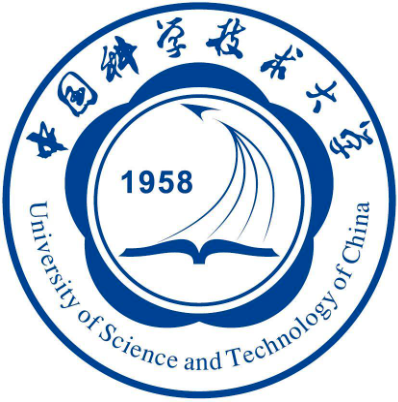
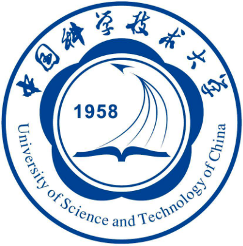
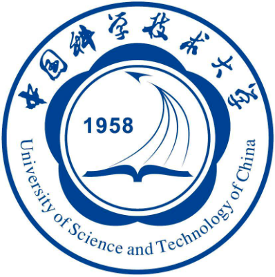
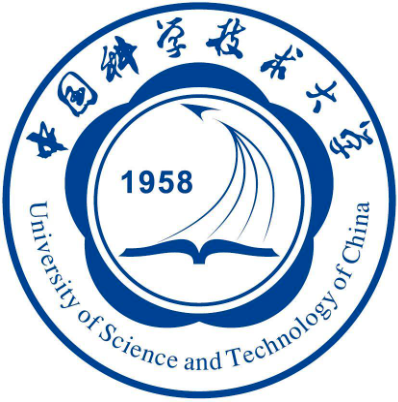

I am currently a PhD candidate supervised by Prof. Yinxing Xue at University of Science and Technology of China . I recieved my bachelor degree from Nantong University in 2020. I am also privileged to collaborate with Prof. Zhenya Zhang who has been supporting my research since 2021. Between 2022 and 2023, I had a research internship at NIO Inc. supervised by Prof. George Zhou .